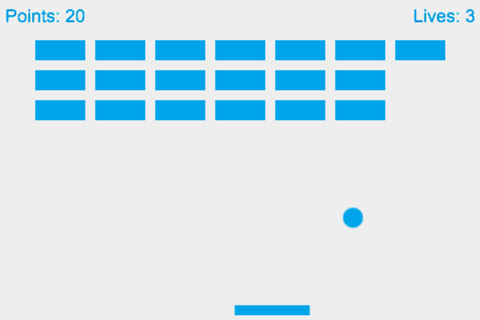

{{Next("Games/Workflows/2D_Breakout_game_Phaser/Initialize_the_framework")}}
In this step-by-step tutorial, we create a simple mobile MDN Breakout game written in JavaScript, using the Phaser framework.
Every step has editable, live samples available to play with, so you can see what the intermediate stages should look like. You will learn the basics of using the Phaser framework to implement fundamental game mechanics like rendering and moving images, collision detection, control mechanisms, framework-specific helper functions, animations and tweens, and winning and losing states.
To get the most out of this series of articles you should already have basic to intermediate JavaScript knowledge. After working through this tutorial, you should be able to build your own simple Web games with Phaser.

All the lessons — and the different versions of the MDN Breakout game we are building together — are available on GitHub:
As a note on learning paths — starting with pure JavaScript is the best way to get a solid knowledge of web game development. If you are not already familiar with pure JavaScript game development, we would suggest that you first work through this series' counterpart, 2D breakout game using pure JavaScript.
After that, you can pick any framework you like and use it for your projects; we have chosen Phaser as it is a good solid framework, with a good support and community available, and a good set of plugins. Frameworks speed up development time and help take care of the boring parts, allowing you to concentrate on the fun stuff. However, frameworks are not always perfect, so if something unexpected happens or you want to write some functionality that the framework does not provide, you will need some pure JavaScript knowledge.
Note: This series of articles can be used as material for hands-on game development workshops. You can also make use of the Gamedev Phaser Content Kit based on this tutorial if you want to give a talk about game development with Phaser.
Ok, let us get started! Head to the first part of the series — Initialize the framework.
{{Next("Games/Workflows/2D_Breakout_game_Phaser/Initialize_the_framework")}}